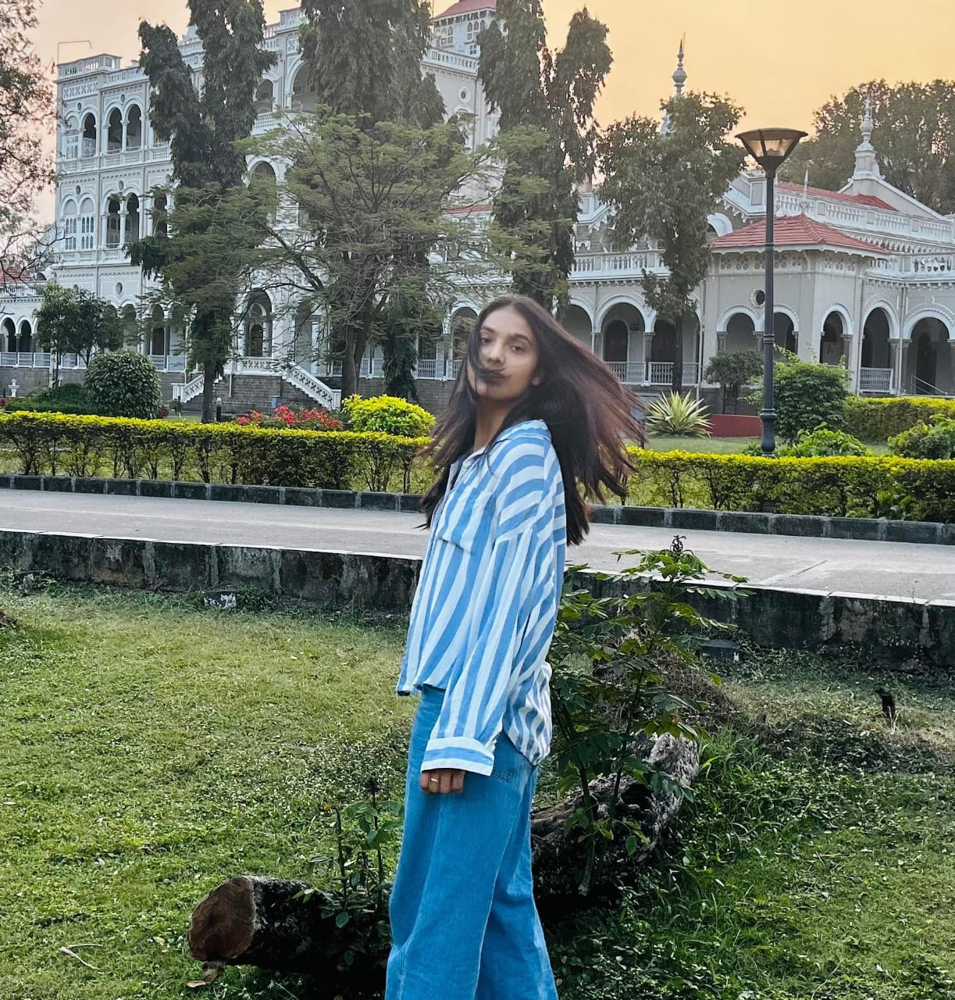
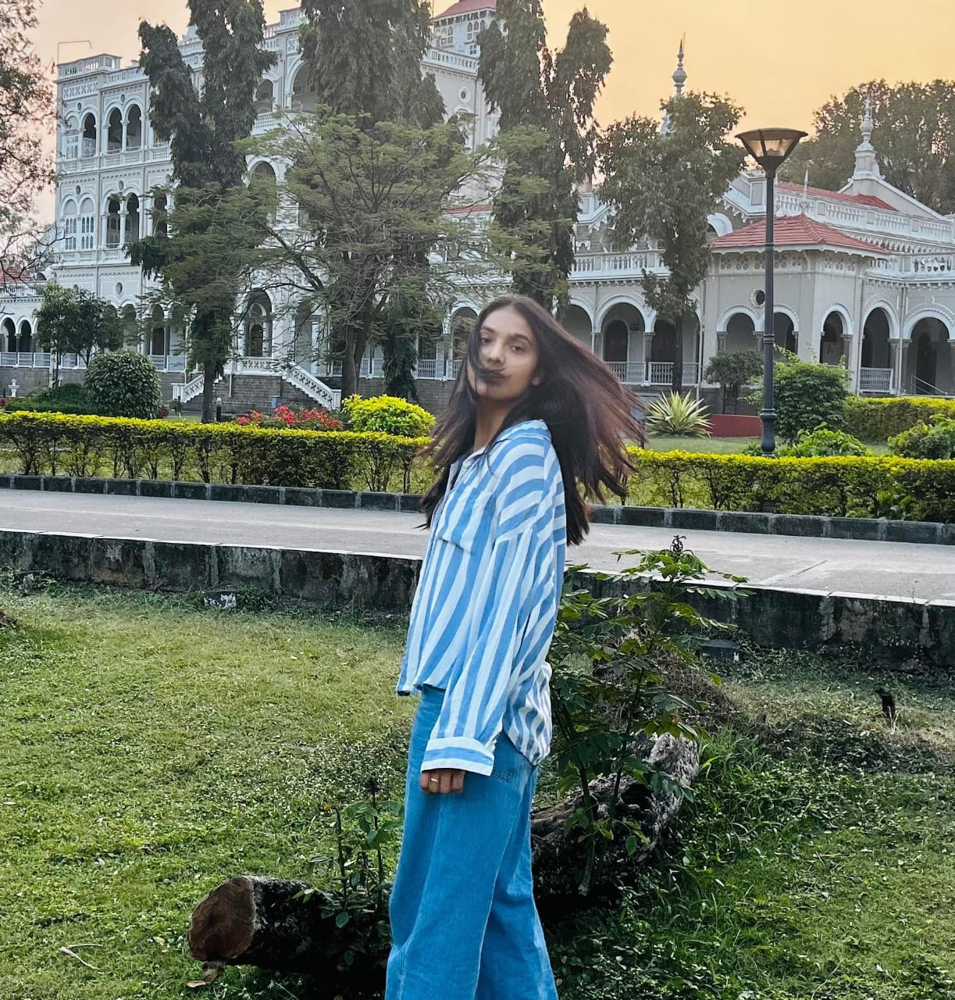

Janmadinam Subhakankashalu Jansi Mahalakshmi Garu🎉, There are a ton of things to say but na degera words levu to explain what an wonderful person you are. But nenu na egera una words toh chepadaniki try chesta...💬😊
You are like a home, full of stories, full of emotions, full of memories. Intilo una prathi manishi aa House ni vala way lo different ga perceive chestaru. Alane prathi manishi ki aa Illu toh koni sweet an sour memories untai. similarly nuvu koda oka Illu where heart finds its peace. Where warmth lingers in the air, and netho spend chesina prathi moment holds a memory. Where silence is comforting, laughter is familiar, and caring is unspoken yet always felt. Ikada yevariki fake ga pretend cheyalsina avasaram undadu, Everything is as real as it seems.
You are like a Road, never ending, Konasagutune untavu. yepudu kotha prayanalu angeekaristhu. No matter yentha pedha vanna or Varadha ochina ni nee roopani marchaledu. just like in life no matter yetha samasiya ochina you'll never let your morals move even an inch.


Alane neelo oka Samudram undi, beyond explaination, Oka life time ardham chesukovali anukuna waste, oka manishi ga neekantu explaination iva lenu, nuvu yento ani teliyali ante experience cheyali, aa magic ni experience cheyali, just music lane.
 

Ni Andam oka Butterfly laga, ni navu Honey antha sweet, ni Kallu pearls kanta bright, ni soul prakruti antha pure, ni kopam Vana kanna laga, ni prema samudram antha, ni innocence summer tarvata ochina first varsham, ni mata oka poetry, ni kindness Amma mamakaram antha
Saraswati devi pampinchina Devata vi nuvu, nuvuIntha kanta explain cheyali anti aa Venkateswara Swami digi ravili.
1) Your kindness. 2) The way you laugh. 3) Your eyes. 4) Your smile. 5) The way you tie your hair. 6) Your passion. 7) Your intelligence. 8) The way you love your family. 9) How you help everyone. 10) How you remember the tiniest details. 11) The way you get excited about the little things. 12) Your strength, even when you don't realize it. 13) How you make even silence feel comforting. 14) The way you always find the good in everything. 15) Your voice. 16) How you're not afraid to be vulnerable. 17) Your honesty, even when it's hard. 18) How you see beauty in the ordinary. 19) The way you challenge to be better. 20) Your silly side that no one else gets to see. 21) The way your presence lights up a room. 22) Your cheeks. 23) Your charm. 24) Your words. 25) Your heart and soul. 26) Your focus. 27) Your dreams. 28) Your energy. 29) Your wit. 30) The way your presence turns a bad day around. 31) How you never give up on the people you love. 32) The way you listen, really listen. 33) How you make the world feel a little less heavy. 34) Because you're you, and that's enough. 35) Your gentleness. 36) The way you walk. 37) Your Passion towards work. 38) The way you care so deeply. 39) Your faith. 40) Your confidence. 41) Your Soulfulness. 42) Your silliness. 43) The way you sing. 44) Your creativity and imagination. 45) Your resilience—how you rise no matter what. 46) The way you love, fully and fearlessly. 47) The little things you do.
Every single thing about you makes you special. ✨💖
Have a great year ahead! 🎉🎂🎈
Once again, Many Many Happy Returns Of The Day 🎉🎊🎁 Jansi Mahalakshmi Garu 💐💫